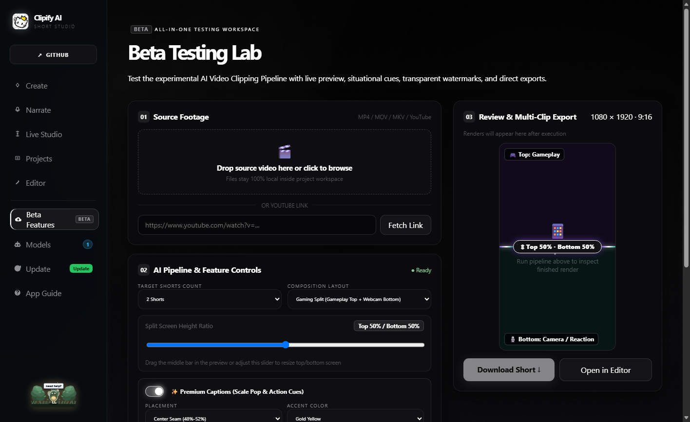
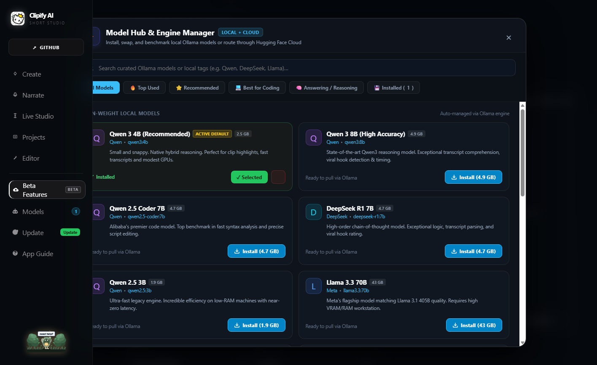

Built For Fast & Intuitive Creation
Explore the desktop workspaces included inside Clipify AI.

Main Clipping Studio
Import YouTube links or local video files, select local Ollama models, choose caption fonts, and trigger batch vertical Shorts generation.

Beta Testing Lab & Split Resizer
Interactively drag the split divider between 30% and 70%, add timed text overlays on the 9:16 frame, and test experimental features.

Narrate Studio
Synthesize viral story scripts with local LLMs, choose neural Kokoro voices with instant audio previews, and render faceless gameplay shorts.

Post-Render Editor & Branding
Real-time vertical video playback with draggable logo overlays, transparency control, scale adjustment, and chroma-key background removal.

Model Hub & Engine Manager
Discover, benchmark, and switch between Ollama models with live latency metrics and VRAM usage monitoring.

Project & Clips Archive
Organize, preview, rename, and publish finished vertical shorts with complete viral titles, descriptions, and hashtags.